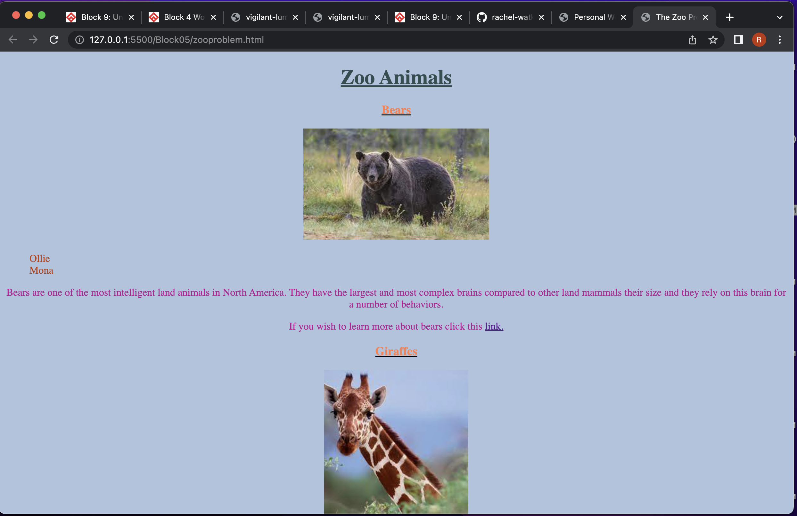
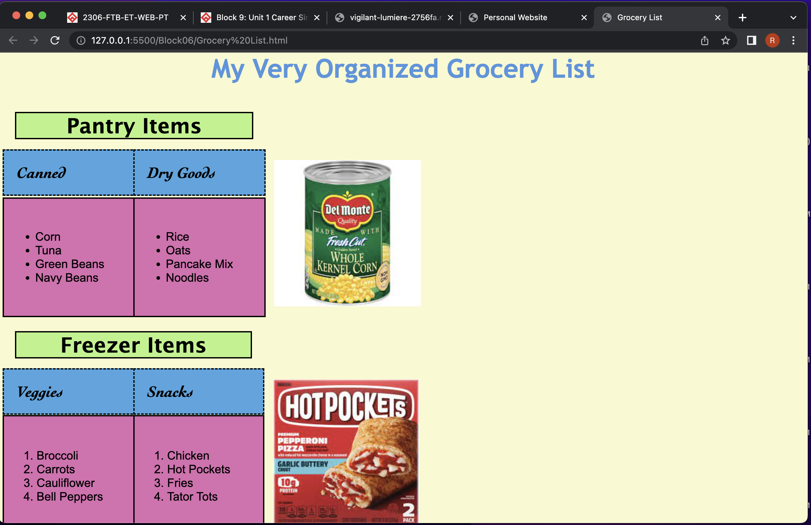

Projects I've completed so far during this class
The Zoo Problem
The Zoo Problem was one of the first projects we started working on in this class. They wanted us to build a page that a developer may have been asked to build for a zoo. This website was supposed to help interns identify each animal and understand their needs and behaviors.
Some of the requirements for this project were to incorporate major HTML semantic tags. An example of those would be like a header, footer, or section. They also asked for a main header of the page, a title for the browser tab, and a heading for each animal type.
There were five animals in total that we needed to include on the page. We also included the animal's names so that the interns would have help remembering the names. Then we added a description of the animal, a picture of the animal, and a link to a website with more facts about that animal.
Grocery List
After the Zoo Problem we then moved on to the Grocery List project. The point of this project was to make a grocery list online. This was to make it more readily available than a piece of paper and the online list could have images.
We had to again incorporate major HTML semantic tags. Each section had to have background colors and needed to be in a type of section. We had to use a box model and the CSS needed to be incorporated using an external file.
There were two types of lists that we needed to make, one for pantry items and one for freezer items. Each list had it's own section. We also included two photos that had padding so that they were spaced away from the text element.
Secure the Vault

Secure the Vault was one of my favorite projects to work on in this class. This project was to create a page that would display a combination. This combination was to a secret vault that the user needed to access. I was very proud with how this project turned out.
We first had to write pseudocode of our steps on how to solve the exercise. We also had to incorporate a string and three variable elements into our javascript. Then we created a dialog box to display the information on the website.
I created a string and then I created my three variables in my javascript. I made sure to incorporate unique arithmetic operators in each of my variables. I then created an alert to show the dialog box on the screen.